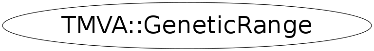

Function Members (Methods)
public:
| virtual | ~GeneticRange() |
| static TClass* | Class() |
| TMVA::GeneticRange | GeneticRange(const TMVA::GeneticRange&) |
| TMVA::GeneticRange | GeneticRange(TRandom3* rnd, TMVA::Interval* interval) |
| Double_t | GetFrom() |
| Double_t | GetTo() |
| Double_t | GetTotalLength() |
| virtual TClass* | IsA() const |
| TMVA::GeneticRange& | operator=(const TMVA::GeneticRange&) |
| Double_t | Random(Bool_t near = kFALSE, Double_t value = 0, Double_t spread = 0.1, Bool_t mirror = kFALSE) |
| Double_t | RandomDiscrete() |
| virtual void | ShowMembers(TMemberInspector& insp) |
| virtual void | Streamer(TBuffer& b) |
| void | StreamerNVirtual(TBuffer& b) |
Data Members
private:
| Double_t | fFrom | |
| TMVA::Interval* | fInterval | holds the complete information of the interval |
| Int_t | fNbins | |
| TRandom3* | fRandomGenerator | the randomGenerator for calculating the new values |
| Double_t | fTo | the constraints of the coefficient |
| Double_t | fTotalLength | the distance between the lower and upper constraints |
Class Charts
{kind=link}
{kind=link}
{kind=link}
{kind=link}

Function documentation
GeneticRange(TRandom3* rnd, TMVA::Interval* interval)
defines the "f" (from) and "t" (to) of the coefficient and takes a randomgenerator
Double_t Random(Bool_t near = kFALSE, Double_t value = 0, Double_t spread = 0.1, Bool_t mirror = kFALSE)
creates a new random value for the coefficient
Parameters:
Bool_t near : takes a random value near the current value
double value : this is the current value
double spread : the sigma of the gaussian which is taken to calculate the new value
Bool_t mirror : if the new value would be outside of the range, mirror = false
maps the value between the constraints by periodic boundary conditions.
With mirror = true, the value gets "reflected" on the boundaries.
Double_t ReMapMirror(Double_t val)
remapping the value to the allowed space by reflecting on the boundaries
GeneticRange(TRandom3* rnd, TMVA::Interval* interval)